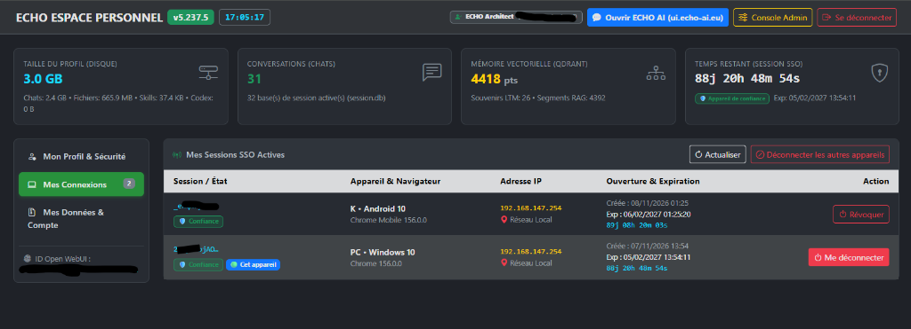

2. Manuel Utilisateur
Documentation officielle de l'Espace Cognitif Heuristique Opérationnel (ECHO), conçu par Wilfried BARNAVON et distribué sous licence libre Apache 2.0. À l'opposé des assistants conversationnels passifs, ECHO incarne une Sparring Partner rationnelle-logique et assertive-incisive, orientée vers la rigueur dialectique, la factualité et l'action opérationnelle.
Rationnelle & Logique Pilier
Déduction analytique stricte, détection des biais cognitifs, validation formelle des hypothèses et vérification factuelle systématique avant affirmation.
Assertive & Incisive Posture
Opposition constructive : l'IA pointe immédiatement les failles d'un plan ou d'une argumentation sans fard rhétorique ni formules obséquieuses.
Souveraine & Locale Norme
Environnement privé et auto-hébergé. Neutralité vis-à-vis des objectifs de l'utilisateur et focalisation exclusive sur la faisabilité technique.
1. Connexion et Sécurité SSO
L'accès à la plateforme ECHO est protégé par le portail d'identité ECHO Auth. Vous vous authentifiez avec votre adresse e-mail et votre mot de passe, suivis d'un code à usage unique temporaire (MFA / TOTP généré sur votre application d'authentification).
💡 Comportement du Single Sign-On (SSO) et Portail Personnel (my.votre-domaine)
Une fois l'authentification validée, votre session est automatiquement propagée à l'interface de discussion
(Open WebUI) ainsi qu'aux services autorisés sans ressaisie de mot de passe. Lors de la connexion, vous pouvez
indiquer s'il s'agit d'un appareil personnel de confiance (pour bénéficier d'une session prolongée) ou d'un
poste partagé (session temporaire à expiration rapide). En mode public, vous disposez également d'un portail
personnel dédié (ECHO Espace Personnel sur https://my.votre-domaine, accessible
depuis la bannière d'accueil) permettant de visualiser en un coup d'œil votre empreinte disque (Chats, Fichiers,
Skills, Codex), vos conversations actives, vos souvenirs vectoriels Qdrant et le compte à rebours d'expiration de
votre session SSO, de révoquer à distance vos connexions sur d'autres appareils (Mes Connexions), de
modifier votre nom ou votre mot de passe (Mon Profil & Sécurité), et d'exporter à tout moment
l'intégralité de vos données dans une archive .tar.xz automatiquement détruite du serveur sitôt
téléchargée ou de supprimer votre compte (Mes Données & Compte). Lors d'une déconnexion, la session
est purgée sur l'ensemble des composants.

2. Sélection du Mode Cognitif
Dans le sélecteur de modèle d'Open WebUI (ou via les paramètres du moteur ECHO), vous pouvez laisser l'IA gérer automatiquement sa puissance de réflexion ou fixer un palier précis :
| Mode | Comportement | Usage recommandé |
|---|---|---|
COGNITIVE_MODE (AUTO / MANUAL) |
AUTO adapte dynamiquement la cognition jusqu'au plafond fixé. MANUAL verrouille le modèle sur COGNITIVE_MODEL. |
Gouvernance du pilotage cognitif (adaptatif PCD ou forçage strict). |
ZEPHYR (MODEL_ZEPHYR) |
Modèle rapide pour la discussion courante, la synthèse rapide et la consultation de vos préférences. | Échanges conversationnels rapides et économie de quota. |
APOLLO (MODEL_APOLLO) |
Modèle agentique doté d'une réflexion approfondie et de l'exécution d'outils (Web, Code, Codex). | Développement, recherche web et analyse de fichiers. |
PROMETHEUS (MODEL_PROMETHEUS) |
Moteur d'analyse profonde, d'architecture système et d'orchestration multi-agents. | Conception système (HLD), débats d'experts (Delphi) et débogage complexe. |
ATHENA (MODEL_ATHENA) |
Moteur suprême de raisonnement formel, d'ingénierie critique et de cyber-défense. | Complexité algorithmique extrême, audit de sécurité et arbitrage critique. |
3. Les Commandes Opérationnelles (!commande)
Vous pouvez piloter directement le comportement du cœur d'ECHO en plaçant l'une des commandes suivantes dans votre message :
| Commande | Effet immédiat |
|---|---|
!help |
Affiche les noms et versions du Modèle et du Framework, la liste des commandes et outils disponibles, puis propose un accompagnement adapté à votre objectif. |
!plan |
Active le mode de conception Top-Down : ECHO s'interdit toute action modificatrice, conçoit un plan d'action formel, une arborescence architecturale et une analyse contradictoire des failles, puis attend votre validation. |
!goal |
Lance une exécution autonome continue : ECHO agit comme un hyperviseur qui délègue l'exécution technique et les tests à ses sous-agents de manière itérative jusqu'à la satisfaction empirique de l'objectif. |
!status |
Génère un rapport d'état structuré (Modèle & Framework, Résumé, état de la Persona, Apprentissage, Artéfacts de la session et état proprioceptif). |
!Résumé |
Présente une synthèse structurée de l'avancement de la session en cours. |
!Rédacteur / !Coach / !Prof |
Active le mode spécialisé correspondant de la Persona d'ECHO (ou !Persona pour revenir au
comportement natif). |
4. Interface Visuelle : Jauge, Fenêtres Persistées, Liens Codex et Mode Vocal
- Jauge de Contexte & Quota (en haut de l'écran) : Expose en permanence la saturation de la mémoire de travail avec une capsule indiquant le pourcentage consommé sur le dernier tour, un anneau pulsant pendant la réflexion de l'IA, ainsi que les jauges de Quota 5h et Quota Semaine du fournisseur Cloud. Survolez l'icône cadenas ou les barres colorées pour consulter le tableau récapitulatif des quotas et le détail différentiel du dernier échange.
- Continuité Spatiale Multi-Discussions, Branches & Liens Codex Directs : Vos fenêtres de
travail
(éditeur Codex, moniteurs) sont mémorisées par conversation. Si vous passez d'une discussion à une autre, les
fenêtres de la première sont mises de côté sans être fermées et réapparaissent à leur emplacement exact (même
après un rafraîchissement de page ou depuis un second navigateur). Si vous supprimez un message intermédiaire ou
bifurquez la conversation, ECHO nettoie la branche abandonnée tout en conservant intacts les fichiers, plans et
images déjà produits. De plus, tout fichier mentionné par ECHO dans
ses réponses devient un lien cliquable (
✏️ou👁️) qui ouvre directement le document dans l'éditeur Codex. - Tiroir d'Actions (ECHO App Drawer, bouton flottant à droite) : Regroupe en un clic toutes les applications intégrées : l'éditeur de code, de texte et de fichiers binaires ECHO Codex, le coffre-fort de secrets Identity Vault, la supervision en direct des agents (Agent Monitor), le rejeu vidéo de navigation web, l'export PDF, la purge chirurgicale de mémoire et la migration de session (Poursuivre dans une nouvelle conversation).
- Interaction Vocale Directe (Dictée & Mode Appel Vocal) : Le bouton microphone et le mode
d'appel vocal intégré vous permettent d'échanger à la voix sans configuration supplémentaire. En mode appel
vocal, ECHO privilégie automatiquement son palier rapide (
ZEPHYR), adapte sa syntaxe au style oral (réponses concises, sans listes ni blocs de code) et restitue ses réponses via une synthèse vocale naturelle au timbre feutré.